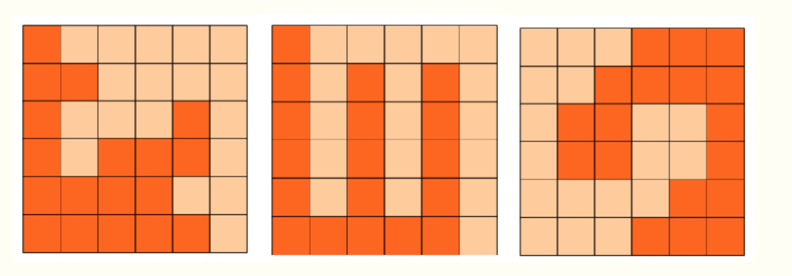

- 第一题 购物单
- 第二题 等差素数列
- 第三题 承压计算
- 第四题 方格分割
- 第六题 最大公共子串
- 第七题 日期问题
- 输入
- 输出
- 样例输入
- 样例输出
- 第八题 包子凑数
- 第九题 分巧克力
- 第十题 k倍区间
- 输入
- 输出
第一题 购物单
小明刚刚找到工作，老板人很好，只是老板夫人很爱购物。老板忙的时候经常让小明帮忙到商场代为购物。小明很厌烦，但又不好推辞。
这不，XX大促销又来了！老板夫人开出了长长的购物单，都是有打折优惠的。
小明也有个怪癖，不到万不得已，从不刷卡，直接现金搞定。
现在小明很心烦，请你帮他计算一下，需要从取款机上取多少现金，才能搞定这次购物。
取款机只能提供100元面额的纸币。小明想尽可能少取些现金，够用就行了。
你的任务是计算出，小明最少需要取多少现金。
以下是让人头疼的购物单，为了保护隐私，物品名称被隐藏了
--------------------
**** 180.90 88折
**** 10.25 65折
**** 56.14 9折
**** 104.65 9折
**** 100.30 88折
**** 297.15 半价
**** 26.75 65折
**** 130.62 半价
**** 240.28 58折
**** 270.62 8折
**** 115.87 88折
**** 247.34 95折
**** 73.21 9折
**** 101.00 半价
**** 79.54 半价
**** 278.44 7折
**** 199.26 半价
**** 12.97 9折
**** 166.30 78折
**** 125.50 58折
**** 84.98 9折
**** 113.35 68折
**** 166.57 半价
**** 42.56 9折
**** 81.90 95折
**** 131.78 8折
**** 255.89 78折
**** 109.17 9折
**** 146.69 68折
**** 139.33 65折
**** 141.16 78折
**** 154.74 8折
**** 59.42 8折
**** 85.44 68折
**** 293.70 88折
**** 261.79 65折
**** 11.30 88折
**** 268.27 58折
**** 128.29 88折
**** 251.03 8折
**** 208.39 75折
**** 128.88 75折
**** 62.06 9折
**** 225.87 75折
**** 12.89 75折
**** 34.28 75折
**** 62.16 58折
**** 129.12 半价
**** 218.37 半价
**** 289.69 8折
--------------------
需要说明的是，88折指的是按标价的88%计算，而8折是按80%计算，余者类推。
特别地，半价是按50%计算。
请提交小明要从取款机上提取的金额，单位是元。
答案是一个整数，类似4300的样子，结尾必然是00，不要填写任何多余的内容。
特别提醒：不许携带计算器入场，也不能打开手机。
解答： 就是基本的运算。
#include<stdio.h>
main()
{
float a;
a = 180.90*0.88+10.25*0.65+56.14*0.9+104.65*0.9+100.3*0.88+297.15*0.5+26.75*0.65+130.62*0.5
+240.28*0.58+270.62*0.8+115.87*0.88+247.34*0.95+73.21*0.9+101*0.5+79.54*0.5+278.44*0.7+199.26*0.5
+12.97*0.9+166.30*0.78+125.50*0.58+84.98*0.9+113.35*0.68+166.57*0.5+42.56*0.9+81.90*0.95
+131.78*0.8+255.89*0.78+109.17*0.9+146.69*0.68+139.33*0.65+141.16*0.78+154.74*0.8+59.42*0.8
+85.44*0.68+293.70*0.88+261.79*0.65+11.30*0.88+268.27*0.58+128.29*0.88+251.03*0.8+208.39*0.75
+128.88*0.75+62.06*0.9+225.87*0.75+12.89*0.75+34.28*0.75+62.16*0.58+129.12*0.5+218.37*0.5+289.69*0.8;
printf("%f",a);
}
算出来结果为5136.859375 取钱应为5200
第二题 等差素数列
2,3,5,7,11,13,....是素数序列。
类似：7,37,67,97,127,157 这样完全由素数组成的等差数列，叫等差素数数列。
上边的数列公差为30，长度为6。
2004年，格林与华人陶哲轩合作证明了：存在任意长度的素数等差数列。
这是数论领域一项惊人的成果！
有这一理论为基础，请你借助手中的计算机，满怀信心地搜索：
长度为10的等差素数列，其公差最小值是多少？
注意：需要提交的是一个整数，不要填写任何多余的内容和说明文字。
先用素数筛筛出素数，然后暴力
#include <stdio.h>
#include <memory.h>
#include <iostream>
using namespace std;
int p[100010];
int prim[100010];
int len=0;
void isp()
{
//构造素数数列
memset(p,0,sizeof(p));
p[0]=1;p[1]=1;p[2]=0;
for(int i=0;i<10000;i++)
{
if(p[i])
continue;
for(int j=i;j*i<10000;j++)
{
p[i*j]=1;
}
prim[len++]=i;
}
}
int main()
{
isp();
for(int i=0;i<len;i++)
{
int ss=prim[i]; //记录当前素数
for(int c=1;c<1000;c++) //c为公差
{
int j;
for(j=1;j<10;j++)
{
if(p[ss+c*j])
break;
}
if(j>=10)
{
cout<<c<<' '<<ss<<endl;
return 0;
}
}
}
}
答案为210.
第三题 承压计算
X星球的高科技实验室中整齐地堆放着某批珍贵金属原料。
每块金属原料的外形、尺寸完全一致，但重量不同。
金属材料被严格地堆放成金字塔形。
7
5 8
7 8 8
9 2 7 2
8 1 4 9 1
8 1 8 8 4 1
7 9 6 1 4 5 4
5 6 5 5 6 9 5 6
5 5 4 7 9 3 5 5 1
7 5 7 9 7 4 7 3 3 1
4 6 4 5 5 8 8 3 2 4 3
1 1 3 3 1 6 6 5 5 4 4 2
9 9 9 2 1 9 1 9 2 9 5 7 9
4 3 3 7 7 9 3 6 1 3 8 8 3 7
3 6 8 1 5 3 9 5 8 3 8 1 8 3 3
8 3 2 3 3 5 5 8 5 4 2 8 6 7 6 9
8 1 8 1 8 4 6 2 2 1 7 9 4 2 3 3 4
2 8 4 2 2 9 9 2 8 3 4 9 6 3 9 4 6 9
7 9 7 4 9 7 6 6 2 8 9 4 1 8 1 7 2 1 6
9 2 8 6 4 2 7 9 5 4 1 2 5 1 7 3 9 8 3 3
5 2 1 6 7 9 3 2 8 9 5 5 6 6 6 2 1 8 7 9 9
6 7 1 8 8 7 5 3 6 5 4 7 3 4 6 7 8 1 3 2 7 4
2 2 6 3 5 3 4 9 2 4 5 7 6 6 3 2 7 2 4 8 5 5 4
7 4 4 5 8 3 3 8 1 8 6 3 2 1 6 2 6 4 6 3 8 2 9 6
1 2 4 1 3 3 5 3 4 9 6 3 8 6 5 9 1 5 3 2 6 8 8 5 3
2 2 7 9 3 3 2 8 6 9 8 4 4 9 5 8 2 6 3 4 8 4 9 3 8 8
7 7 7 9 7 5 2 7 9 2 5 1 9 2 6 5 3 9 3 5 7 3 5 4 2 8 9
7 7 6 6 8 7 5 5 8 2 4 7 7 4 7 2 6 9 2 1 8 2 9 8 5 7 3 6
5 9 4 5 5 7 5 5 6 3 5 3 9 5 8 9 5 4 1 2 6 1 4 3 5 3 2 4 1
X X X X X X X X X X X X X X X X X X X X X X X X X X X X X X
其中的数字代表金属块的重量（计量单位较大）。
最下一层的X代表30台极高精度的电子秤。
假设每块原料的重量都十分精确地平均落在下方的两个金属块上，
最后，所有的金属块的重量都严格精确地平分落在最底层的电子秤上。
电子秤的计量单位很小，所以显示的数字很大。
工作人员发现，其中读数最小的电子秤的示数为：2086458231
请你推算出：读数最大的电子秤的示数为多少？
注意：需要提交的是一个整数，不要填写任何多余的内容。
只要把第i行的第j个平均分给第i+1行的第j个和第i+1行的第j+1个
#include <stdio.h>
#include <iostream>
using namespace std;
double num[35][35];
int main()
{
for(int i=1;i<=29;i++)
for(int j=1;j<=i;j++)
cin>>num[i][j];
for(int i=1;i<=29;i++){
for(int j=1;j<=i;j++)
{
num[i+1][j]+=num[i][j]/2;
num[i+1][j+1]+=num[i][j]/2;
}
}
double maxn=-1;
double minn=INT_MAX;
for(int i=1;i<=30;i++)
{
if(maxn<num[30][i]) maxn=num[30][i];
if(minn>num[30][i]) minn=num[30][i];
}
printf("%lf",maxn*2086458231/minn); //进行单位的的换算
}
第四题 方格分割
6x6的方格，沿着格子的边线剪开成两部分。
要求这两部分的形状完全相同。
如图：p1.png, p2.png, p3.png 就是可行的分割法。
试计算：
包括这3种分法在内，一共有多少种不同的分割方法。
注意：旋转对称的属于同一种分割法。
请提交该整数，不要填写任何多余的内容或说明文字。

应该把边当成走廊，因为剪出的是中心对称，所以必定经过（3，3）
所以可以从（3，3）开始出发两个人以中心对称的方式出发，当走到边界的时候两个人走的路线就是剪开的线路
因为是中心对称，这样出来的答案应该除以4
#include <stdio.h>
#include <iostream>
using namespace std;
int visited[10][10];
int ans=0;
int dir[4][2]={0,1,1,0,0,-1,-1,0};
void dfs(int x,int y)
{
if(x==0||y==0||x==6||y==6)
{
ans++;
return ;
}
for(int i=0;i<4;i++)
{
int nx=x+dir[i][0];
int ny=y+dir[i][1];
if(visited[nx][ny])
continue;
visited[nx][ny]=1;
visited[6-nx][6-ny]=1;
dfs(nx,ny);
visited[nx][ny]=0; //上次路线假设情况求取后 ，将路线标记置为0
visited[6-nx][6-ny]=0; //同上对称图形也将路线标记置为0
}
}
int main()
{
memset(visited,0,sizeof(visited));
visited[3][3]=1;
dfs(3,3);
printf("%d %d\n",ans,ans/4);
}
第六题 最大公共子串
最大公共子串长度问题就是：
求两个串的所有子串中能够匹配上的最大长度是多少。
比如："abcdkkk" 和 "baabcdadabc"，
可以找到的最长的公共子串是"abcd",所以最大公共子串长度为4。
下面的程序是采用矩阵法进行求解的，这对串的规模不大的情况还是比较有效的解法。
请分析该解法的思路，并补全划线部分缺失的代码。
#include <stdio.h>
#include <string.h>
#define N 256
int f(const char* s1, const char* s2)
{
int a[N][N];
int len1 = strlen(s1);
int len2 = strlen(s2);
int i,j;
memset(a,0,sizeof(int)*N*N);
int max = 0;
for(i=1; i<=len1; i++){
for(j=1; j<=len2; j++){
if(s1[i-1]==s2[j-1]) {
a[i][j] = __________________________; //填空
if(a[i][j] > max) max = a[i][j];
}
}
}
return max;
}
int main()
{
printf("%d\n", f("abcdkkk", "baabcdadabc"));
return 0;
}
基础dp，答案：a[i-1][j-1]+1
第七题 日期问题
小明正在整理一批历史文献。这些历史文献中出现了很多日期。小明知道这些日期都在1960年1月1日至2059年12月31日。令小明头疼的是，这些日期采用的格式非常不统一，有采用年/月/日的，有采用月/日/年的，还有采用日/月/年的。更加麻烦的是，年份也都省略了前两位，使得文献上的一个日期，存在很多可能的日期与其对应。
比如02/03/04，可能是2002年03月04日、2004年02月03日或2004年03月02日。
给出一个文献上的日期，你能帮助小明判断有哪些可能的日期对其对应吗？
输入
一个日期，格式是"AA/BB/CC"。 (0 <= A, B, C <= 9)
输出
输出若干个不相同的日期，每个日期一行，格式是"yyyy-MM-dd"。多个日期按从早到晚排列。
样例输入
02/03/04
样例输出
2002-03-04
2004-02-03
2004-03-02
资源约定：
峰值内存消耗（含虚拟机） < 256M
CPU消耗 < 1000ms
注意：
main函数需要返回0;
只使用ANSI C/ANSI C++ 标准;
不要调用依赖于编译环境或操作系统的特殊函数。
所有依赖的函数必须明确地在源文件中 #include
不能通过工程设置而省略常用头文件。
提交程序时，注意选择所期望的语言类型和编译器类型。
只有年/月/日的，月/日/年的，日/月/年三种情况
#include <cstdio>
#include <cstring>
using namespace std;
int time[150][15][35];
bool pd(int n,int y,int r)
{
int rn=0;
if(n%400==0||(n%100!=0&&n%4==0))
rn=1;
if(n==1||n==3||n==5||n==7||n==8||n==10||n==12)
if(r>31) return 0;
if(n==4||n==6||n==9||n==11)
if(r>30) return 0;
if(n==2)
if(r>28+rn) return 0;
return 1;
}
int main()
{
int a,b,c;
//memset(time,0,sizeof(time));
scanf("%d/%d/%d",&a,&b,&c);
if(a>=60&&b<=12&&c<=31)
time[a-60][b][c]=1;
if(a<60&&b<=12&&c<=31)
time[a+40][b][c]=1;
if(c>=60&&a<=12&&b<=31)
time[c-60][a][b]=1;
if(c<60&&a<=12&&c<=31)
time[c+40][a][b]=1;
if(c>=60&&b<=12&&a<=31)
time[c-60][b][a]=1;
if(c<60&&b<=12&&a<=31)
time[c+40][b][a]=1;
for(int i=0;i<=100;i++)
for(int j=1;j<=12;j++)
for(int k=1;k<=31;k++)
if(time[i][j][k]==1)
{
if(pd(i,j,k))
{
printf("%d-",i+1960);
if(j<9)
printf("0%d-",j);
else
printf("%d-",j);
if(k<9)
printf("0%d\n",k);
else
printf("%d\n",k);
}
}
}
第八题 包子凑数
小明几乎每天早晨都会在一家包子铺吃早餐。他发现这家包子铺有N种蒸笼，其中第i种蒸笼恰好能放Ai个包子。每种蒸笼都有非常多笼，可以认为是无限笼。
每当有顾客想买X个包子，卖包子的大叔就会迅速选出若干笼包子来，使得这若干笼中恰好一共有X个包子。比如一共有3种蒸笼，分别能放3、4和5个包子。当顾客想买11个包子时，大叔就会选2笼3个的再加1笼5个的（也可能选出1笼3个的再加2笼4个的）。
当然有时包子大叔无论如何也凑不出顾客想买的数量。比如一共有3种蒸笼，分别能放4、5和6个包子。而顾客想买7个包子时，大叔就凑不出来了。
小明想知道一共有多少种数目是包子大叔凑不出来的。
这题可以使用欧几里得拓展算法：
对于不完全为 0 的非负整数 a，b，gcd（a，b）表示 a，b 的最大公约数，必然
存在整数对 x，y ，使得 gcd（a，b）=ax+by。
简单的说就是当所有的输入的最大公约数都为1时，为有限个，否则为无限个。
#include <cstdio>
#include <cstring>
using namespace std;
bool judge(int x,int y)
{
int t;
while(y>0)
{
t=x%y;
x=y;
y=t;
}
if(x==1)
return true;
return false;
}
int a[110],n;
bool dp[10010];
int main()
{
scanf("%d",&n);
for(int i=0; i<n; i++)
scanf("%d",&a[i]);
int flag=0;
for(int i=0;i<n;i++)
{
for(int j=1;j<=n;j++)
{
if(judge(a[i],a[j]))
{
flag=1;
break;
}
}
if(flag==1)
break;
}
if(flag!=1)
{
printf("INF\n");
return 0;
}
dp[0]=1;
for(int i=0; i<n; i++)
{
for(int j=0; j+a[i]<10000; j++)
if(dp[j])
dp[j+a[i]]=1;
}
int ans=0;
for(int i=0; i<10000; i++)
{
if(dp[i]!=1)
ans++;
}
printf("%d\n",ans);
return 0;
}
第九题 分巧克力
儿童节那天有K位小朋友到小明家做客。小明拿出了珍藏的巧克力招待小朋友们。
小明一共有N块巧克力，其中第i块是Hi x Wi的方格组成的长方形。为了公平起见，小明需要从这 N 块巧克力中切出K块巧克力分给小朋友们。切出的巧克力需要满足：
1. 形状是正方形，边长是整数
2. 大小相同
例如一块6x5的巧克力可以切出6块2x2的巧克力或者2块3x3的巧克力。
当然小朋友们都希望得到的巧克力尽可能大，你能帮小Hi计算出最大的边长是多少么？
输入
第一行包含两个整数N和K。(1 <= N, K <= 100000)
以下N行每行包含两个整数Hi和Wi。(1 <= Hi, Wi <= 100000)
输入保证每位小朋友至少能获得一块1x1的巧克力。
输出
输出切出的正方形巧克力最大可能的边长。
样例输入：
2 10
6 5
5 6
样例输出：
2
资源约定：
峰值内存消耗（含虚拟机） < 256M
CPU消耗 < 1000ms
#include <stdio.h>
#define N 100005
using namespace std;
int n,k;
struct cho
{
int h;
int w;
};
cho c[N];
bool judge(int len)
{
int sum=0;
for(int i=0;i<len;i++)
{
sum+=(c[i].h/len)*(c[i].w/len);
if(sum>=k)
return 1;
}
return 0;
}
int main()
{
scanf("%d%d",&n,&k);
int low=1;
int high=100000;
int mid;
for(int i=0; i<n; i++)
scanf("%d%d",&c[i].h,&c[i].w);
while(low<high-1)
{
mid=(low+high)/2;
if(!judge(mid))
high=mid;
else
low=mid;
}
printf("%d\n",mid-1);
return 0;
}
第十题 k倍区间
给定一个长度为N的数列，A1, A2, ... AN，如果其中一段连续的子序列Ai, Ai+1, ... Aj(i <= j)之和是K的倍数，我们就称这个区间[i, j]是K倍区间。
你能求出数列中总共有多少个K倍区间吗？
输入
第一行包含两个整数N和K。(1 <= N, K <= 100000)
以下N行每行包含一个整数Ai。(1 <= Ai <= 100000)
输出
输出一个整数，代表K倍区间的数目。
例如，
输入：
5 2
1
2
3
4
5
程序应该输出：
6
资源约定：
峰值内存消耗（含虚拟机） < 256M
CPU消耗 < 2000ms
可通过滑动窗口的方法来解，提前对数据进行处理可缩短执行时间
#include <stdio.h>
using namespace std;
int a[100010];
long long dp[100010];
int main()
{
int n,k,i,j;
scanf("%d%d",&n,&k);
dp[0]=0;
for(i=1;i<=n;i++)
{
scanf("%d",&a[i]);
dp[i]=dp[i-1]+a[i]; //累加之前的数字
}
int ans=0;
for(i=1;i<=n;i++)
{
for(j=0;j<=n-i;j++)
{
if((dp[j+i]-dp[j])%k==0) //通过调整i，j来循环判断，这里i表示区间的长度，j为向右滑动步数。
ans++;
}
}
printf("%d\n",ans);
return 0;
}